Single-Cell RNA-seq Preprocessing and QC Pipeline
SUMMARY
Initialize environment and load merged single-cell AnnData object
Configure analysis parameters and define marker sets of interest
Perform biological pre-filtering (Erythrocytes & Secreting cells)
Execute iterative QC refinement for Cells (
obs) and Genes (var)Visualize QC metrics stratified by study metadata
Apply filtering, clean metadata, and save preprocessed object
1. Environment & Data Loading
Load libraries and configure GPU/threading settings
Load the merged raw database (
00_tonsil_blood_DISCO_merged.h5ad)Define plotting parameters (
rcParams) for high-quality figures
2. Configuration & Marker Setup
Initialize
adata.uns["config"]viasc_code.setup_adatato centralize parametersDefine specific immune marker lists (T cells, B cells, NK, Myeloid) for downstream validation
Set experiment-specific metadata (organism, dataset name, save paths)
3. Biological Heuristic Filtering
Set initial broad QC thresholds for mitochondrial content and counts
Subset data to remove likely misannotated cell types based on biological logic:
Remove Erythrocytes (Hb genes)
Remove specific Secreting cells based on fine-grained labels and protein coding percentage
4. Stratified QC Visualization
Generate violin plots to identify outliers across different metadata levels:
Sample Type (Disease/Condition)
Study Category (Database/Source)
Platform (Assay protocol)
Customize
keys_for_qcto focus on specific metrics (e.g.,pct_HK_gtex,pct_MT)
5. Cell-Level (Obs) QC Refinement
Iteratively visualize upper and lower distributions of QC metrics
Refine filtering thresholds for:
Upper bounds: Doublets/outliers (Max genes, Max counts, Max MT%)
Lower bounds: Low-quality cells (Min genes, Min counts, Min unique, Min RBS%)
Tag cells using
sc_code.all_filters_tagging
6. Gene-Level (Var) QC Refinement
Calculate highly variable genes and bin rankings
Visualize gene metrics to determine expression cutoffs
Refine thresholds for minimum counts and cell prevalence to reduce noise
7. Object Cleaning & Finalization
Apply boolean masks to physically subset the AnnData object (
good_quality)Remove specific poor-quality clinical samples (e.g., specific tonsil surgeries)
Configure
sample_n_condition_keysfor downstream density plottingPrint dataset statistics (cell counts, crosstabs) and execution time
8. Saving
Save the fully preprocessed and filtered AnnData object to
.h5ad(01_tonsil_blood_DISCO_preprocessed.h5ad) with compression
Imports
[1]:
# Enable autoreloading, delete this for deploying!!!
%load_ext autoreload
%autoreload 2
%load_ext memory_profiler
[2]:
%%time
import os # Provides functions to interact with the operating system
# NOTE: UNCOMMENT IF NO GPU AVAILABLE!
os.environ["CUDA_VISIBLE_DEVICES"] = "0" # Adjust device IDs as per your setup,
# IBMS Libraries
from scToolkit import sc_code
from scToolkit import sc_plots
from scToolkit import sc_utils
# Some libraries (e.g., decoupler) may require setting rarely used parallelization
# backends. This function ensures all common thread settings are configured.
# utils.set_threads(10)
/projects/Research/Internal/Proximap/ssd/envs/scToolkit_check_TD/proximap_stable_28_08_2025/lib/python3.12/site-packages/louvain/__init__.py:54: UserWarning: pkg_resources is deprecated as an API. See https://setuptools.pypa.io/en/latest/pkg_resources.html. The pkg_resources package is slated for removal as early as 2025-11-30. Refrain from using this package or pin to Setuptools<81.
from pkg_resources import get_distribution, DistributionNotFound
CUDA devices visible: 0
CPU times: user 6.08 s, sys: 667 ms, total: 6.75 s
Wall time: 5.03 s
[3]:
# Other general libraries that might be hepflull for analysis
import re # Enables regular expression matching and text processing
import time # Offers time-related functions (e.g., sleep, timestamps)
# in Python, most assignments are references (symbolic links), not copies
from copy import deepcopy as copy # Creates deep copies of complex objects
import scanpy as sc # Toolkit for analyzing single-cell gene expression data
import anndata as ad # Provides AnnData structure for annotated data matrices
import seaborn as sns # Simplifies creation of attractive statistical plots
import numpy as np # Supports numerical operations and N-dimensional arrays
import pandas as pd # Offers data structures and tools for data analysis
import matplotlib.pyplot as plt # Enables plotting and figure customization
from itertools import combinations # Gene∫Ωrates all k-length combinations of an iterable
import scipy.stats as stats # Contains statistical distributions and test functions
# Define rcParams for customization, notebook showing is figure.dpi, reduce to not overload the nootebook sizes
plt.rcParams.update({
# "figure.figsize": (8, 6), # Figure size in inches
"savefig.dpi": 400, # Dots per inch for saved figures
"figure.dpi": 100, # Dots per inch for saved figures
#"axes.titlesize": 16, # Title font size
#"axes.labelsize": 14, # Label font size
#"xtick.labelsize": 12, # X-axis tick label size
#"ytick.labelsize": 12 # Y-axis tick label size
})
# Setup matplotlib notebook backend
%matplotlib inline
[4]:
start = time.time()
Load the Database Adata object
[5]:
adata = sc_code.load_h5ad("../data/00_tonsil_blood_DISCO_merged.h5ad")
# Will show a warning, because it was not saved with the scToolkit functionality
WARNING:sc_code.py:load_h5ad - The Pickled adata.uns file is not in the same directory as the .h5ad. We could not load it. Please ensure the pickled file is in the same directory.
Preprocess the object for QC
Summary of get_config Function - Adding the configuration dictionary to the adata.uns[“config”]
This function builds a detailed configuration dictionary for a single-cell analysis pipeline. It centralizes all parameters for preprocessing, clustering, visualization, and saving results.
⚙️ General Analysis Settings
Controls CPU cores, GPU usage, random seed, and overwrite behavior.
Handles normalization, scaling, log transformation, and QC options.
Can be accessed later via
adata.uns["config"]["general"].
🧬 Data & Experiment Setup
Stores experiment name, dataset name, parameter setup, and save paths.
Defines organism-specific keys (mitochondrial, ribosomal, pseudogenes, hemoglobin, etc.).
Accessible through
adata.uns["config"]["general"]["organism"],adata.uns["config"]["general"]["path_to_database"], and similar keys.
🧪 Gene and Marker Configuration
Defines marker genes to include or exclude from analysis.
Supports adding marker genes to highly variable gene selection.
Loads QC gene sets depending on organism (e.g., human or mouse).
Marker options are in
adata.uns["config"]["marker_genes_to_exclude_from_filtering"]andadata.uns["config"]["marker_genes_to_include_in_highly_variables"].
🔬 Preprocessing & Clustering
Configures filtering, normalization, scaling, PCA, neighborhood graph, clustering (Leiden), and UMAP parameters.
Supports automatic PCA dimension selection.
Important:
adata.uns["config"]["pp"]andadata.uns["config"]["tl"]hold the standard parameter dictionaries for Scanpy preprocessing (pp) and tools (tl) functions. Use them directly in Scanpy calls for reproducibility and consistency.
🎨 Visualization Options
Extensive settings for UMAPs, heatmaps, dot plots, violins, dendrograms, and more.
Defines which plots to show or save (figures, CSVs, etc.).
Visualization parameters are in
adata.uns["config"]["pl"]andadata.uns["config"]["to_plot"].
💾 Saving & Output
Sets file formats for saving results (CSV, Excel).
Supports saving intermediate data (e.g., normalized or scaled counts).
Includes options for saving cluster stats and differential expression results.
Controlled via
adata.uns["config"]["general"]["save_figures"],adata.uns["config"]["to_create"], and related keys.
✅ In short: get_config builds a single, flexible setup stored in adata.uns["config"], making it easy to access, adjust, and reuse throughout your single-cell analysis workflow — including direct use in Scanpy.
Prepare the object
[6]:
# Markers that are specific for the experiment, and will be saved in the adata object and used as defaults for some plots.
markers_of_interest = [
"CD3D", "CD4", "CD8A", "FOXP3", # T cells
"MS4A1", "CD19", "MZB1", "XBP1", # B cells / plasma
"NCAM1", "NKG7", # NK cells
"CD14", "FCGR3A", "C1QA", "LYZ", # Monocytes/macrophages
"FCER1A", "CLEC9A", # Dendritic cells (cDC2 / cDC1)
"CXCR5", "BCL6", "PDCD1", "MKI67" # Tonsil germinal center / Tfh / proliferation
]
sc_code.setup_adata(adata, param_setup="default",
dataset_name="tonsil_blood", save_path=f"analysis/",
use_GPU=True, organism="human", overwrite=True,
selected_gene_markers=markers_of_interest,
)
Run the QC Preprocessing and Filtering
[7]:
%%time
# You can tag the cells by defaults before this step and still refine them afterwards
# by running the all_filters_tagging after plotting the qc violins
# ##################################################
# Choose the qc criteria to filter and visualize
# ----------
# Filter cells
# ----------
adata.uns["config"]["pp"]["filter_qc_var_obs"]["min_n_genes"] = 200
adata.uns["config"]["pp"]["filter_qc_var_obs"]["min_n_counts"] = 400
adata.uns["config"]["pp"]["filter_qc_var_obs"]["max_n_counts"] = 25000
adata.uns["config"]["pp"]["filter_qc_var_obs"]["min_n_unique"] = 3 # higher would be better, but usually the data we get has poor quality
# adata.uns["config"]["pp"]["filter_qc_var_obs"]["max_pct_HG"] = 1 # For filtereing Erythrocytes but they will be removed by the pseudogene filtering step later on
adata.uns["config"]["pp"]["filter_qc_var_obs"]["max_pct_MT"] = 15 # To ensure less close-to-dying cells
# ----------
# Filter genes
# ----------
adata.uns["config"]["pp"]["filter_qc_var_var"]["min_n_cells"] = 100
adata.uns["config"]["pp"]["filter_qc_var_var"]["min_n_unique"] = 5 # higher would be better, but usually the data we get has poor quality
# ##################################################
# Run qc
sc_code.all_qc_preprocessing(adata)
WARNING:sc_utils.py:flag_gene_family - Gene set identifiers GTF_MT GTF_TEC_genes is/are empty, deleting it from the analysis
INFO:sc_code.py:all_qc_preprocessing - flag_gene_family: 0.0822446346282959
INFO:sc_code.py:all_qc_preprocessing - QC_metrics: 112.65068221092224
INFO:sc_code.py:all_qc_preprocessing - After_flag_gene_family: 0.008282661437988281
INFO:sc_code.py:all_qc_preprocessing - get_n_unique_n_max_count: 44.12029767036438
INFO:sc_code.py:all_qc_preprocessing - after_get_n_unique: 84.50948476791382
INFO:sc_code.py:all_filters_tagging - Number of good quality (cells, genes): (703648, 13966); bad quality: (17027, 9489); time: 0.72s
INFO:sc_code.py:all_qc_preprocessing - all_filters_tagging: 0.7193834781646729
INFO:sc_code.py:all_qc_preprocessing - Tagged 17027 cells and 9489 genes as bad quality.
INFO:sc_code.py:all_qc_preprocessing - QC keys for visualization: ['max_count', 'n_counts', 'n_genes', 'n_unique', 'pct_GTF_IG_genes', 'pct_GTF_TR_genes', 'pct_GTF_processed_transcripts', 'pct_GTF_protein_coding', 'pct_HG', 'pct_HGNC_non_coding_RNA', 'pct_HGNC_pseudogene', 'pct_HK_cellminer', 'pct_HK_gtex', 'pct_HK_hk_intersect', 'pct_HK_hk_union', 'pct_HK_hrt', 'pct_HK_human', 'pct_HK_klijn', 'pct_MT', 'pct_RBS', 'top_10_ratio'].
You can change them by accessing it via: adata.uns["config"]["general"]["keys_for_qc"]["obs"] and the corresponding regex adata.uns["config"]["qc"]["gene_identifiers"]
CPU times: user 5min 15s, sys: 18.5 s, total: 5min 33s
Wall time: 4min 2s
Prefiltered good QC violin plots
[8]:
violin_start = time.time()
[9]:
adata
[9]:
AnnData object with n_obs × n_vars = 720675 × 23455
obs: 'orig.ident', 'ncount_rna', 'nfeature_rna', 'sample', 'sample_id', 'project_id', 'sample_type', 'disease', 'tissue', 'platform', 'disease_subtype', 'time_point', 'subject_id', 'age', 'gender', 'race', 'infection', 'disease_stage', 'mutation', 'predicted_cell_type', 'ct', 'sub.cluster', 'pct_gtex', 'pct_hpa', 'pct_hrt', 'pct_cellminer', 'pct_klijn', 'pct_IG_C_gene', 'pct_IG_C_pseudogene', 'pct_IG_J_gene', 'pct_IG_V_gene', 'pct_IG_V_pseudogene', 'pct_TR_C_gene', 'pct_TR_J_gene', 'pct_TR_J_pseudogene', 'pct_TR_V_gene', 'pct_TR_V_pseudogene', 'pct_lncRNA', 'pct_miRNA', 'pct_protein_coding', 'pct_ribozyme', 'pct_snRNA', 'pct_snoRNA', 'pct_pseudogenes_hg', 'n_unique', 'study_category', 'barcode', 'donor_id', 'gem_id', 'library_name', 'assay', 'sex', 'age_group', 'hospital', 'cohort_type', 'cause_for_tonsillectomy', 'is_hashed', 'preservation', 'annotation_level_1', 'annotation_level_1_probability', 'annotation_figure_1', 'annotation_20220215', 'annotation_20220619', 'annotation_20230508', 'annotation_20230508_probability', 'UMAP_1_level_1', 'UMAP_2_level_1', 'UMAP_1_20220215', 'UMAP_2_20220215', 'UMAP_1_20230508', 'UMAP_2_20230508', 'type', 'projectid', 'cell_sorting', 'subjectid', 'processstatus', 'rna_snn_res.0.8', 'seurat_clusters', 'percent.mt', 'percent.rp', 'ct_fixed', 'ct_broad', 'ct_finegrained_combined', 'n_genes', 'n_counts', 'pct_HK_gtex', 'pct_HK_cellminer', 'pct_HK_hpa', 'pct_HK_klijn', 'pct_HK_human', 'pct_HK_hrt', 'pct_HK_hk_union', 'pct_HK_hk_intersect', 'pct_HK_hk_intersect_no_hrt', 'pct_GTF_IG_genes', 'pct_GTF_processed_transcripts', 'pct_GTF_pseudogenes', 'pct_GTF_TR_genes', 'pct_GTF_RBS', 'pct_GTF_protein_coding', 'pct_HGNC_non_coding_RNA', 'pct_HGNC_other', 'pct_HGNC_protein_coding_gene', 'pct_HGNC_pseudogene', 'pct_MT', 'pct_RBS', 'pct_MTRBS', 'pct_PSEUDO', 'pct_HG', 'max_count', 'top_5_ratio', 'top_10_ratio', 'good_quality'
var: 'HK_gtex', 'HK_cellminer', 'HK_hpa', 'HK_klijn', 'HK_human', 'HK_hrt', 'HK_hk_union', 'HK_hk_intersect', 'HK_hk_intersect_no_hrt', 'GTF_IG_genes', 'GTF_processed_transcripts', 'GTF_pseudogenes', 'GTF_TR_genes', 'GTF_RBS', 'GTF_protein_coding', 'HGNC_non_coding_RNA', 'HGNC_other', 'HGNC_protein_coding_gene', 'HGNC_pseudogene', 'MT', 'RBS', 'MTRBS', 'PSEUDO', 'HG', 'n_cells', 'mean_counts', 'n_counts', 'n_unique', 'pct_cells', 'max_count', 'good_quality'
uns: 'config', 'stats'
obsm: 'X_pca', 'X_umap'
Postfiltering of likely misannotated Secreting cell-types and Erythrocytic lineage in the databases
[10]:
pd.reset_option("display.max_rows", None)
ssubsetter_pr_coding = adata.obs["pct_HGNC_protein_coding_gene"] >= 80
secreting_labels = [
"Plasma cell",
"preMature IgG+ PC",
"IgG+ PC precursor",
"Mature IgA+ PC",
"Mature IgG+ PC",
"MBC derived IgG+ PC",
"MBC derived IgA+ PC",
"PB",
"MBC derived PC precursor",
"preMature IgM+ PC",
"MBC derived early PC precursor",
"IgD PC precursor",
"Short lived IgM+ PC",
"Mature IgM+ PC",
"IgM+ PC precursor",
"DZ migratory PC precursor",
"Early PC precursor",
"Transitional PB",
"Plasma cell precursor",
"PC committed Light Zone GCBC",
"IgM+ early PC precursor",
"PB committed early PC precursor",
"Megakaryocyte",
"Red blood cell"
]
hb_labels = [
"Megakaryocyte",
"Red blood cell"
]
[11]:
# Plasma cells
ssubsetter_secreting = adata.obs["ct_finegrained_combined"].isin(secreting_labels)
adata = adata[ssubsetter_secreting | ssubsetter_pr_coding].copy()
adata
# adata[ssubsetter_secreting | ssubsetter_pr_coding].obs["pct_HGNC_protein_coding_gene"].hist(bins=100);
[11]:
AnnData object with n_obs × n_vars = 710750 × 23455
obs: 'orig.ident', 'ncount_rna', 'nfeature_rna', 'sample', 'sample_id', 'project_id', 'sample_type', 'disease', 'tissue', 'platform', 'disease_subtype', 'time_point', 'subject_id', 'age', 'gender', 'race', 'infection', 'disease_stage', 'mutation', 'predicted_cell_type', 'ct', 'sub.cluster', 'pct_gtex', 'pct_hpa', 'pct_hrt', 'pct_cellminer', 'pct_klijn', 'pct_IG_C_gene', 'pct_IG_C_pseudogene', 'pct_IG_J_gene', 'pct_IG_V_gene', 'pct_IG_V_pseudogene', 'pct_TR_C_gene', 'pct_TR_J_gene', 'pct_TR_J_pseudogene', 'pct_TR_V_gene', 'pct_TR_V_pseudogene', 'pct_lncRNA', 'pct_miRNA', 'pct_protein_coding', 'pct_ribozyme', 'pct_snRNA', 'pct_snoRNA', 'pct_pseudogenes_hg', 'n_unique', 'study_category', 'barcode', 'donor_id', 'gem_id', 'library_name', 'assay', 'sex', 'age_group', 'hospital', 'cohort_type', 'cause_for_tonsillectomy', 'is_hashed', 'preservation', 'annotation_level_1', 'annotation_level_1_probability', 'annotation_figure_1', 'annotation_20220215', 'annotation_20220619', 'annotation_20230508', 'annotation_20230508_probability', 'UMAP_1_level_1', 'UMAP_2_level_1', 'UMAP_1_20220215', 'UMAP_2_20220215', 'UMAP_1_20230508', 'UMAP_2_20230508', 'type', 'projectid', 'cell_sorting', 'subjectid', 'processstatus', 'rna_snn_res.0.8', 'seurat_clusters', 'percent.mt', 'percent.rp', 'ct_fixed', 'ct_broad', 'ct_finegrained_combined', 'n_genes', 'n_counts', 'pct_HK_gtex', 'pct_HK_cellminer', 'pct_HK_hpa', 'pct_HK_klijn', 'pct_HK_human', 'pct_HK_hrt', 'pct_HK_hk_union', 'pct_HK_hk_intersect', 'pct_HK_hk_intersect_no_hrt', 'pct_GTF_IG_genes', 'pct_GTF_processed_transcripts', 'pct_GTF_pseudogenes', 'pct_GTF_TR_genes', 'pct_GTF_RBS', 'pct_GTF_protein_coding', 'pct_HGNC_non_coding_RNA', 'pct_HGNC_other', 'pct_HGNC_protein_coding_gene', 'pct_HGNC_pseudogene', 'pct_MT', 'pct_RBS', 'pct_MTRBS', 'pct_PSEUDO', 'pct_HG', 'max_count', 'top_5_ratio', 'top_10_ratio', 'good_quality'
var: 'HK_gtex', 'HK_cellminer', 'HK_hpa', 'HK_klijn', 'HK_human', 'HK_hrt', 'HK_hk_union', 'HK_hk_intersect', 'HK_hk_intersect_no_hrt', 'GTF_IG_genes', 'GTF_processed_transcripts', 'GTF_pseudogenes', 'GTF_TR_genes', 'GTF_RBS', 'GTF_protein_coding', 'HGNC_non_coding_RNA', 'HGNC_other', 'HGNC_protein_coding_gene', 'HGNC_pseudogene', 'MT', 'RBS', 'MTRBS', 'PSEUDO', 'HG', 'n_cells', 'mean_counts', 'n_counts', 'n_unique', 'pct_cells', 'max_count', 'good_quality'
uns: 'config', 'stats'
obsm: 'X_pca', 'X_umap'
[12]:
# Erythrocytes
ssubsetter_hb = adata.obs["pct_HG"] <= 20
subsetter_secreting_2 = adata.obs["ct_finegrained_combined"].isin(hb_labels)
[13]:
# Subset the object
keep_mask = ssubsetter_hb | subsetter_secreting_2
adata = adata[keep_mask].copy()
[14]:
adata
[14]:
AnnData object with n_obs × n_vars = 710499 × 23455
obs: 'orig.ident', 'ncount_rna', 'nfeature_rna', 'sample', 'sample_id', 'project_id', 'sample_type', 'disease', 'tissue', 'platform', 'disease_subtype', 'time_point', 'subject_id', 'age', 'gender', 'race', 'infection', 'disease_stage', 'mutation', 'predicted_cell_type', 'ct', 'sub.cluster', 'pct_gtex', 'pct_hpa', 'pct_hrt', 'pct_cellminer', 'pct_klijn', 'pct_IG_C_gene', 'pct_IG_C_pseudogene', 'pct_IG_J_gene', 'pct_IG_V_gene', 'pct_IG_V_pseudogene', 'pct_TR_C_gene', 'pct_TR_J_gene', 'pct_TR_J_pseudogene', 'pct_TR_V_gene', 'pct_TR_V_pseudogene', 'pct_lncRNA', 'pct_miRNA', 'pct_protein_coding', 'pct_ribozyme', 'pct_snRNA', 'pct_snoRNA', 'pct_pseudogenes_hg', 'n_unique', 'study_category', 'barcode', 'donor_id', 'gem_id', 'library_name', 'assay', 'sex', 'age_group', 'hospital', 'cohort_type', 'cause_for_tonsillectomy', 'is_hashed', 'preservation', 'annotation_level_1', 'annotation_level_1_probability', 'annotation_figure_1', 'annotation_20220215', 'annotation_20220619', 'annotation_20230508', 'annotation_20230508_probability', 'UMAP_1_level_1', 'UMAP_2_level_1', 'UMAP_1_20220215', 'UMAP_2_20220215', 'UMAP_1_20230508', 'UMAP_2_20230508', 'type', 'projectid', 'cell_sorting', 'subjectid', 'processstatus', 'rna_snn_res.0.8', 'seurat_clusters', 'percent.mt', 'percent.rp', 'ct_fixed', 'ct_broad', 'ct_finegrained_combined', 'n_genes', 'n_counts', 'pct_HK_gtex', 'pct_HK_cellminer', 'pct_HK_hpa', 'pct_HK_klijn', 'pct_HK_human', 'pct_HK_hrt', 'pct_HK_hk_union', 'pct_HK_hk_intersect', 'pct_HK_hk_intersect_no_hrt', 'pct_GTF_IG_genes', 'pct_GTF_processed_transcripts', 'pct_GTF_pseudogenes', 'pct_GTF_TR_genes', 'pct_GTF_RBS', 'pct_GTF_protein_coding', 'pct_HGNC_non_coding_RNA', 'pct_HGNC_other', 'pct_HGNC_protein_coding_gene', 'pct_HGNC_pseudogene', 'pct_MT', 'pct_RBS', 'pct_MTRBS', 'pct_PSEUDO', 'pct_HG', 'max_count', 'top_5_ratio', 'top_10_ratio', 'good_quality'
var: 'HK_gtex', 'HK_cellminer', 'HK_hpa', 'HK_klijn', 'HK_human', 'HK_hrt', 'HK_hk_union', 'HK_hk_intersect', 'HK_hk_intersect_no_hrt', 'GTF_IG_genes', 'GTF_processed_transcripts', 'GTF_pseudogenes', 'GTF_TR_genes', 'GTF_RBS', 'GTF_protein_coding', 'HGNC_non_coding_RNA', 'HGNC_other', 'HGNC_protein_coding_gene', 'HGNC_pseudogene', 'MT', 'RBS', 'MTRBS', 'PSEUDO', 'HG', 'n_cells', 'mean_counts', 'n_counts', 'n_unique', 'pct_cells', 'max_count', 'good_quality'
uns: 'config', 'stats'
obsm: 'X_pca', 'X_umap'
Plot the QC
Plot overall QC, good to identify samples/studies/protocols outliers
Here we investigate the sample_type, basically Disease categories
[15]:
%%time
sc_plots.plot_qc_violins(
adata[adata.obs["good_quality"]],
groupby="sample_type",
clip_intervals=[0, 1])
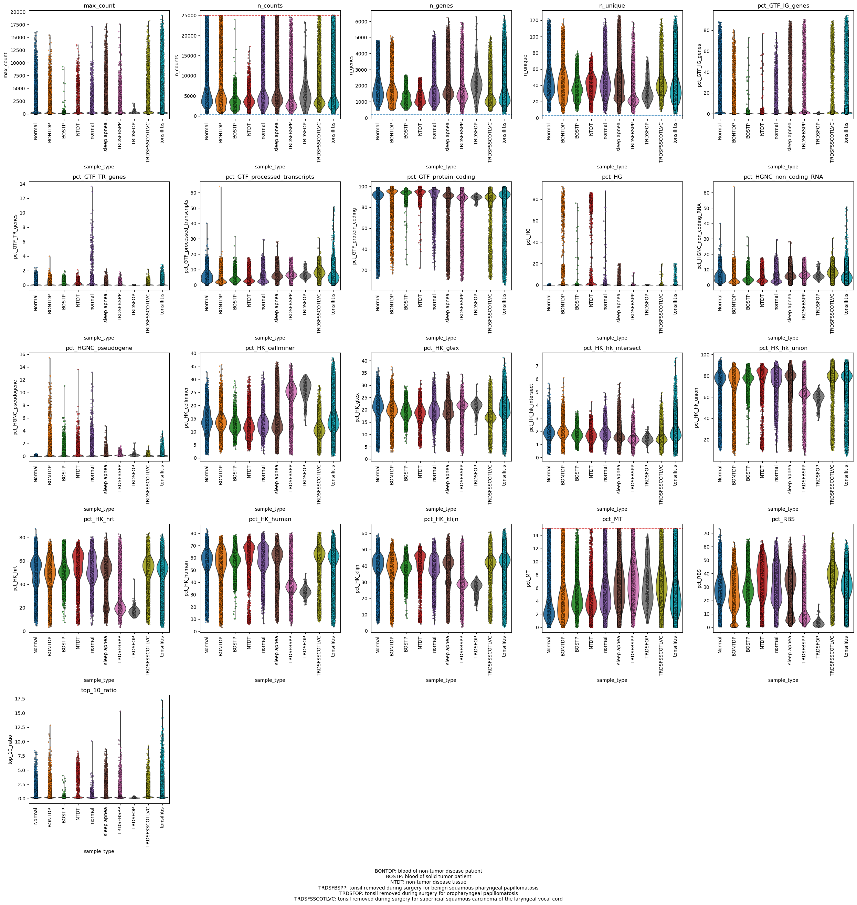
CPU times: user 17min 5s, sys: 4.58 s, total: 17min 9s
Wall time: 7min 7s
Here we investigate the study_category, basically Database and tissue
[16]:
%%time
sc_plots.plot_qc_violins(
adata[adata.obs["good_quality"]],
groupby="study_category",
clip_intervals=[0, 1])
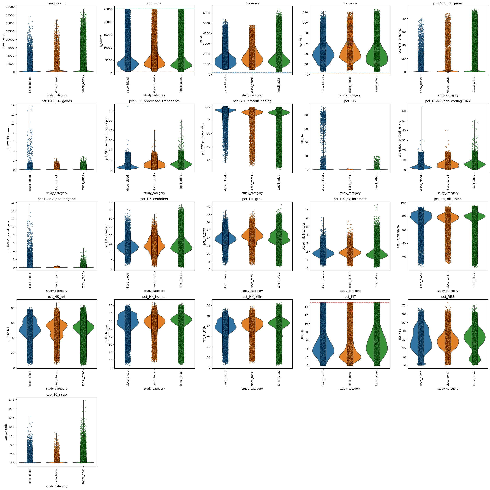
CPU times: user 12min 15s, sys: 2.82 s, total: 12min 18s
Wall time: 6min 59s
Here we investigate the platform/protocol/assay
[17]:
sc_plots.plot_qc_violins(
adata[adata.obs["good_quality"]],
groupby="platform",
clip_intervals=[.9, 1],
do_remove=True)
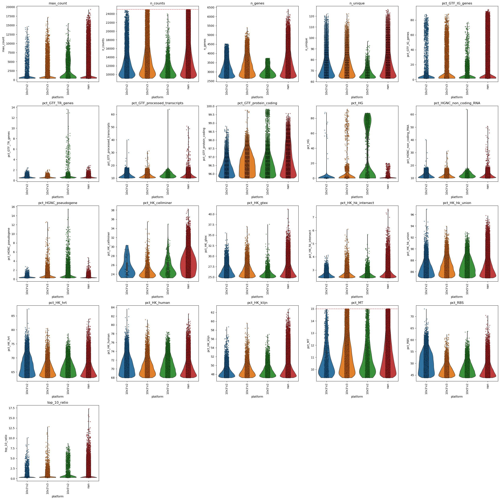
Excourse: The precalculated QC measures in the config
[18]:
# Generally there are 2 different obs/var keys for QC in the adata.uns["config"]["general"]
# "keys_for_qc" for the most informative ones and "keys_for_qc_all" for all, including cell/tissue-type specific ones
# these are dicts with the keys "obs" for the obs keys and "var" for the var keys
# Optionally you can also only plot a subset, because not all are so informative and it takes quiet a while to create the plots
# here a subset of adata.uns["config"]["general"]["keys_for_qc"]["obs"]
old_keys_for_qc = adata.uns["config"]["general"]["keys_for_qc"].copy()
this_vars_for_qc = [
'n_genes', #
'n_counts', #
'n_unique', #
'max_count',
'top_10_ratio',
'pct_HK_gtex', #
'pct_HK_klijn',
'pct_GTF_IG_genes', #
'pct_GTF_TR_genes',
'pct_GTF_protein_coding',
'pct_HGNC_pseudogene', #
'pct_MT',
'pct_RBS',
'pct_HG'
]
# Now you can also overwrite the config to use the plot_qc_violins
adata.uns["config"]["general"]["keys_for_qc"]["obs"] = this_vars_for_qc
# The alternative is to use the plot_qc_violins with the keys
# sc_plots.plot_qc_violins(
# adata[adata.obs["good_quality"]],
# keys=this_vars_for_qc,
# groupby="condition",
# clip_intervals=[.9, 1],
# do_remove=True)
[19]:
%%time
# Here we will only see the selected ones
sc_plots.plot_qc_violins(
adata[adata.obs["good_quality"]],
groupby="study_category",
clip_intervals=[0, 1]) # Here, we don't clip, 0 is the min and 1 the max.
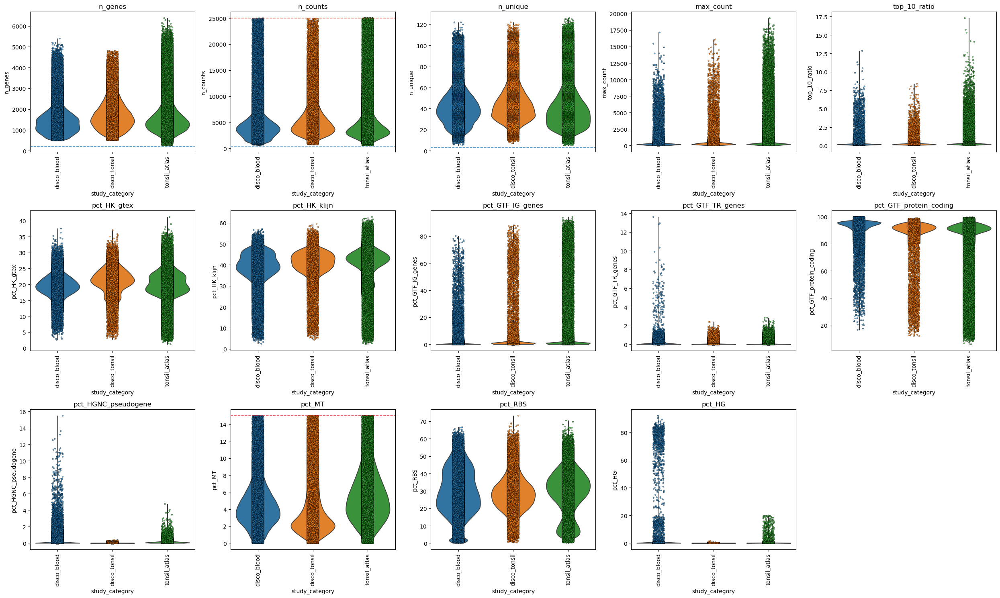
CPU times: user 8min 12s, sys: 1.88 s, total: 8min 14s
Wall time: 4min 41s
QC Refinement OBS
Plot the upper levels
[20]:
%%time
sc_plots.plot_qc_violins(
adata[adata.obs["good_quality"]],
groupby="sample_type",
clip_intervals=[.9, 1], # Top 10%
do_remove=True)
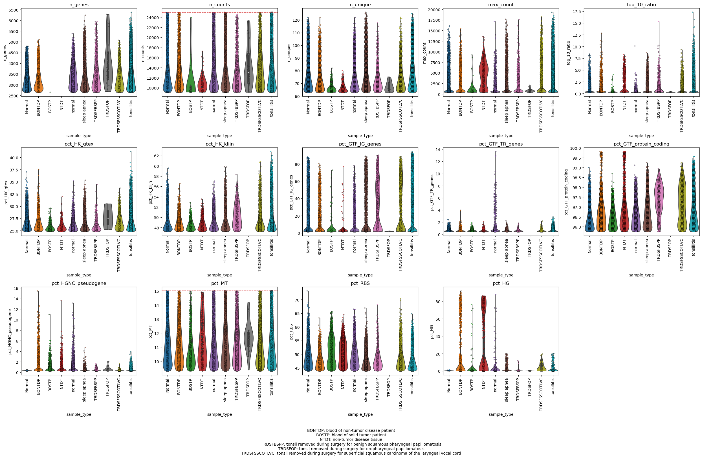
CPU times: user 2min 45s, sys: 1.26 s, total: 2min 46s
Wall time: 52.9 s
Refine/define the upper filtering thresholds
[21]:
adata.uns["config"]["pp"]["filter_qc_var_obs"]["max_n_genes"] = 5000
adata.uns["config"]["pp"]["filter_qc_var_obs"]["max_n_counts"] = 18000
adata.uns["config"]["pp"]["filter_qc_var_obs"]["max_pct_MT"] = 10
Paper plots
[22]:
# Optionally you can also only plot a subset, because not all are so informative and it takes quiet a while to create the plots
# here a subset of adata.uns["config"]["general"]["keys_for_qc"]["obs"]
plot_keys = [
'n_genes',
'n_counts',
'n_unique',
'pct_HK_gtex',
'pct_GTF_IG_genes',
'pct_HGNC_pseudogene',
]
sc_plots.plot_qc_violins(
adata[adata.obs["good_quality"]],
groupby="sample_type",
clip_intervals=[.9, 1],
keys=plot_keys,
do_remove=True,
save_path="../Figures/01_violin_doremove_True.png"
)
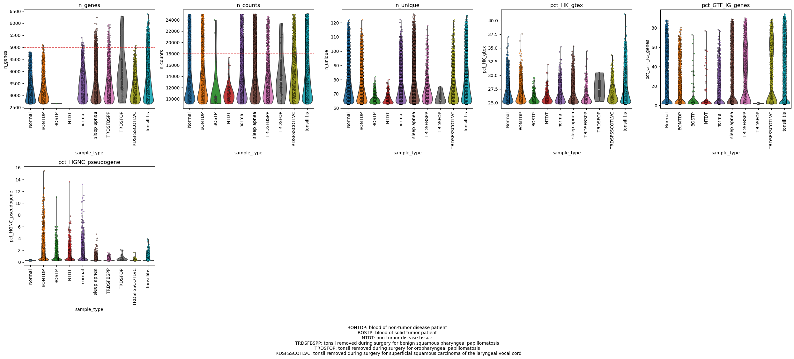
Plot the lower levels
[23]:
%%time
sc_plots.plot_qc_violins(
adata[adata.obs["good_quality"]],
groupby="sample_type",
clip_intervals=[0, .1], # Lower 10%
do_remove=True)
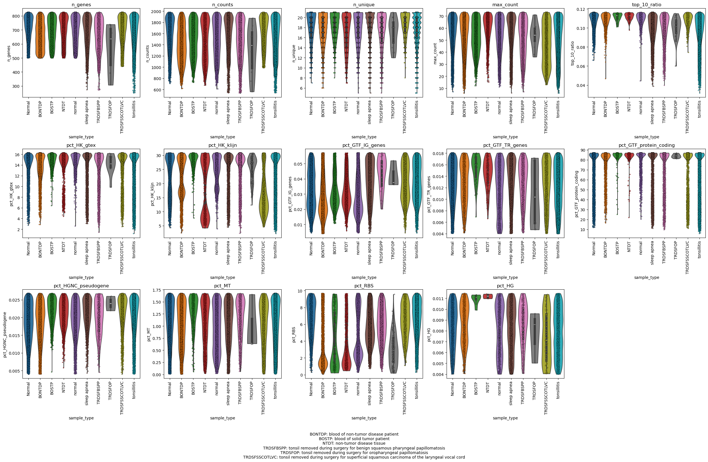
CPU times: user 2min 42s, sys: 956 ms, total: 2min 43s
Wall time: 52.9 s
Refine/define the lower filtering thresholds
[24]:
adata.uns["config"]["pp"]["filter_qc_var_obs"]["min_n_genes"] = 500
adata.uns["config"]["pp"]["filter_qc_var_obs"]["min_n_counts"] = 700
adata.uns["config"]["pp"]["filter_qc_var_obs"]["min_n_unique"] = 10
adata.uns["config"]["pp"]["filter_qc_var_obs"]["min_pct_RBS"] = 1.5
adata.uns["config"]["pp"]["filter_qc_var_obs"]["max_pct_HGNC_pseudogene"] = 1 # This removes the Erythrocytes and some Secreting cells
QC Refinement VAR
Excourse Binning a dataframe - Gene QC grouping on Highly Variable genes.
[25]:
# NOTE: This is automatically calculated in a later step (Run_all_prep_steps_clustering)
# Here we only show this to show 2 features.
# We wrote our own method for highly variable genes:
sc_utils.calc_highly_variable_genes_unique_based(adata)
display(adata.var.sort_values(
["highly_variable_rank"], ascending=False)
["highly_variable_rank"].head(2))
display(adata.var.sort_values(
["highly_variable_rank"], ascending=False)
["highly_variable_rank"].tail(2))
# And here a function to bin a column into a categorical one-
sc_utils.bin_column(adata.var, "highly_variable_rank", bins=5)
IGKC 23455
IGLC2 23454
Name: highly_variable_rank, dtype: uint16
TAB3-AS2 2
C9orf41-AS1 1
Name: highly_variable_rank, dtype: uint16
[26]:
%%time
# Here we show the binary highly_variable
sc_plots.plot_qc_violins(
adata, var_keys_only=True, groupby="highly_variable",
clip_intervals=[0, .98], base_figsize=(5,5))
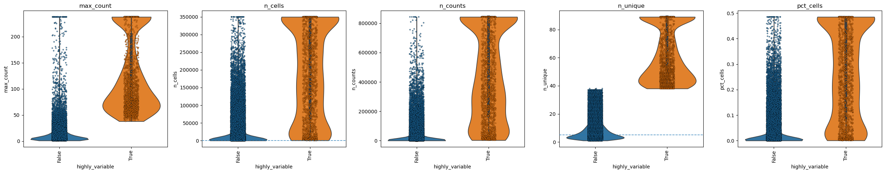
CPU times: user 34.7 s, sys: 35.4 ms, total: 34.7 s
Wall time: 4.83 s
[27]:
%%time
# Here we show the binned version of the ranks
sc_plots.plot_qc_violins(
adata, var_keys_only=True,
groupby="highly_variable_rank_binned",
clip_intervals=[0, .98], base_figsize=(5,5))
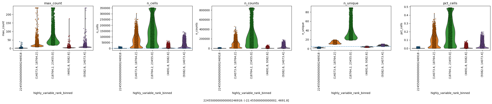
CPU times: user 35.5 s, sys: 29.8 ms, total: 35.5 s
Wall time: 4.9 s
[28]:
sc_plots.plot_qc_violins(
adata, var_keys_only=True,
clip_intervals=[0, 1], # Top 10%
do_remove=True)
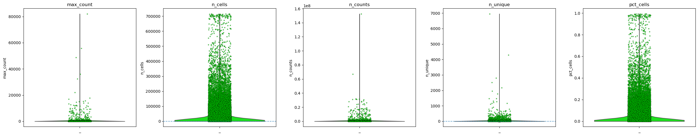
Plot the upper levels
[29]:
sc_plots.plot_qc_violins(
adata, var_keys_only=True,
clip_intervals=[.9, 1], # Top 10%
do_remove=True)
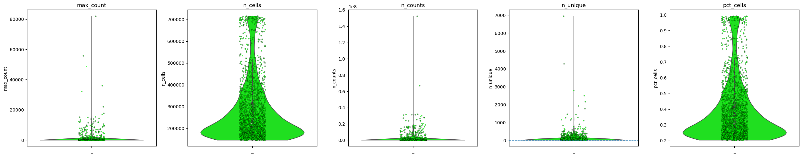
Refine/define the lower upper thresholds
[30]:
# Nothing to do, they look ok
Plot the lower levels
[31]:
sc_plots.plot_qc_violins(
adata,
var_keys_only=True,
clip_intervals=[0, .1], # lower 10%
do_remove=True)
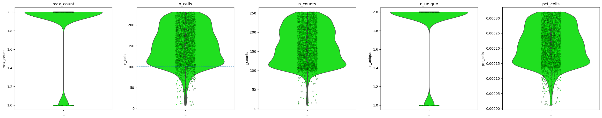
[32]:
sc_plots.plot_qc_violins(
adata,
var_keys_only=True,
clip_intervals=[0, .2], # lower 20%
do_remove=True)
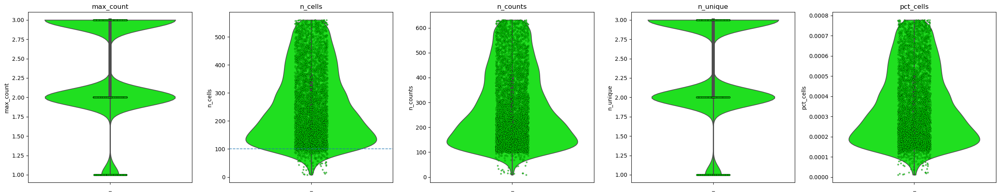
[33]:
sc_plots.plot_qc_violins(
adata, var_keys_only=True,
clip_intervals=[0, .5], # lower 50%
do_remove=True)
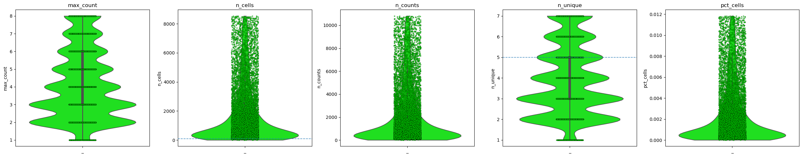
[34]:
sc_plots.plot_qc_violins(
adata[:, adata.var["good_quality"]],
var_keys_only=True,
clip_intervals=[0, .5],
do_remove=True)
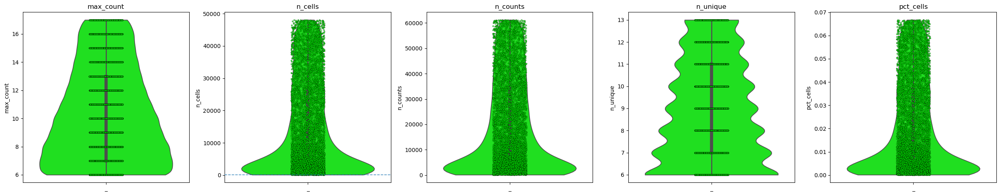
Refine/define the lower filtering thresholds
[35]:
adata.uns["config"]["pp"]["filter_qc_var_var"]["min_n_counts"] = 2000
adata.uns["config"]["pp"]["filter_qc_var_var"]["min_n_cells"] = 2000
adata.uns["config"]["pp"]["filter_qc_var_var"]["min_n_unique"] = 7
adata.uns["config"]["pp"]["filter_qc_var_var"]["min_max_count"] = 10
Apply the QC Tagging
[36]:
sc_code.all_filters_tagging(adata, reset=True)
INFO:sc_code.py:all_filters_tagging - Number of good quality (cells, genes): (619282, 8830); bad quality: (91217, 14625); time: 0.66s
Visualize Post Filtering
[37]:
sc_plots.plot_qc_violins(
adata[adata.obs["good_quality"], adata.var["good_quality"]],
groupby="sample_type")
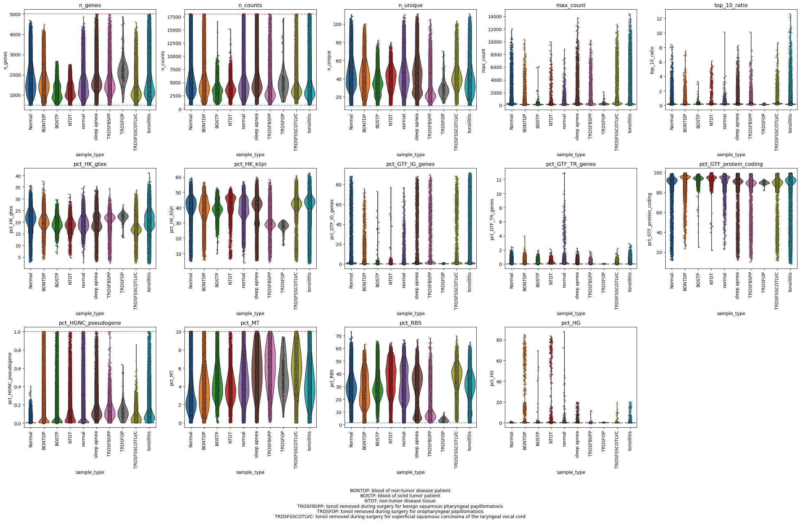
[38]:
sc_plots.plot_qc_violins(
adata[adata.obs["good_quality"], adata.var["good_quality"]],
var_keys_only=True,
clip_intervals=[0.05, .95],
do_remove=True)
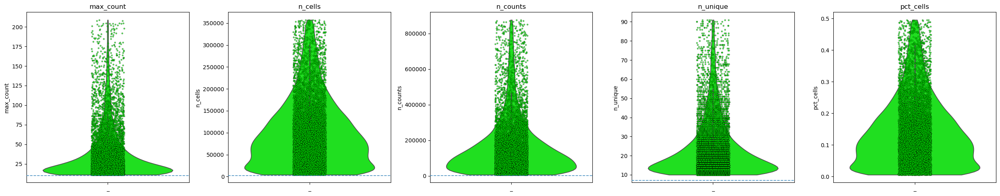
[39]:
violin_end = time.time() - violin_start
Clean the Object
[40]:
# Tag the cells and subset NOTE: IT RETURNS THE FILTERED OBJECT "adata =" is needed!
adata = sc_code.all_filters_tagging(adata, reset=True, apply_filters=True)
# or manual subsetting
# adata = adata[adata.obs["good_quality"], adata.var["good_quality"]].copy()
INFO:sc_code.py:all_filters_tagging - Number of good quality (cells, genes): (619282, 8830); bad quality: (91217, 14625); time: 0.69s
Remove poor quality sample categories
[41]:
adata = adata[~adata.obs["sample_type"].isin([
"tonsil removed during surgery for superficial squamous carcinoma of the laryngeal vocal cord",
"tonsil removed during surgery for benign squamous pharyngeal papillomatosis",
"tonsil removed during surgery for oropharyngeal papillomatosis"])].copy()
Some general keys you can set
[42]:
config = adata.uns["config"]
# To plot default categorical obs values as density plots automatically for the downstream,
# you have to add them here
config["general"]["sample_n_condition_keys"] = ["sample_type", "study_category", "platform"]
# NOTE: make sure these are categorcial values!
for k in config["general"]["sample_n_condition_keys"]:
if k not in adata.obs.keys():
print(f'The key {k} is not in the obs!')
continue
if adata.obs[k].dtype.name != "category":
adata.obs[k] = adata.obs[k].astype("category")
Print some Stats
[43]:
pd.set_option("display.max_rows", None)
adata.obs["ct_broad"].value_counts()
[43]:
ct_broad
B cell 301851
T/NK cell 225787
Monocyte 28770
Plasma cell 6955
Dendritic cell 3969
Granulocyte 3108
Myeloid cell 1273
Immune cell 1165
unknown 237
Name: count, dtype: int64
[44]:
adata.obs["sample_type"].value_counts()
[44]:
sample_type
tonsillitis 244298
sleep apnea 96118
Normal 81952
normal 65055
blood of non-tumor disease patient 51260
blood of solid tumor patient 19272
non-tumor disease tissue 15160
Name: count, dtype: int64
[45]:
pd.crosstab(adata.obs["sample_type"], adata.obs["study_category"])
[45]:
| study_category | disco_blood | disco_tonsil | tonsil_atlas |
|---|---|---|---|
| sample_type | |||
| Normal | 0 | 81952 | 0 |
| blood of non-tumor disease patient | 51260 | 0 | 0 |
| blood of solid tumor patient | 19272 | 0 | 0 |
| non-tumor disease tissue | 15160 | 0 | 0 |
| normal | 65055 | 0 | 0 |
| sleep apnea | 0 | 0 | 96118 |
| tonsillitis | 0 | 0 | 244298 |
[46]:
pd.crosstab(adata.obs["platform"], adata.obs["study_category"])
[46]:
| study_category | disco_blood | disco_tonsil | tonsil_atlas |
|---|---|---|---|
| platform | |||
| 10x3'v2 | 36618 | 60340 | 0 |
| 10x3'v3 | 55654 | 21612 | 0 |
| 10x5'v2 | 58475 | 0 | 0 |
| nan | 0 | 0 | 340416 |
[47]:
adata
[47]:
AnnData object with n_obs × n_vars = 573115 × 8830
obs: 'orig.ident', 'ncount_rna', 'nfeature_rna', 'sample', 'sample_id', 'project_id', 'sample_type', 'disease', 'tissue', 'platform', 'disease_subtype', 'time_point', 'subject_id', 'age', 'gender', 'race', 'infection', 'disease_stage', 'mutation', 'predicted_cell_type', 'ct', 'sub.cluster', 'pct_gtex', 'pct_hpa', 'pct_hrt', 'pct_cellminer', 'pct_klijn', 'pct_IG_C_gene', 'pct_IG_C_pseudogene', 'pct_IG_J_gene', 'pct_IG_V_gene', 'pct_IG_V_pseudogene', 'pct_TR_C_gene', 'pct_TR_J_gene', 'pct_TR_J_pseudogene', 'pct_TR_V_gene', 'pct_TR_V_pseudogene', 'pct_lncRNA', 'pct_miRNA', 'pct_protein_coding', 'pct_ribozyme', 'pct_snRNA', 'pct_snoRNA', 'pct_pseudogenes_hg', 'n_unique', 'study_category', 'barcode', 'donor_id', 'gem_id', 'library_name', 'assay', 'sex', 'age_group', 'hospital', 'cohort_type', 'cause_for_tonsillectomy', 'is_hashed', 'preservation', 'annotation_level_1', 'annotation_level_1_probability', 'annotation_figure_1', 'annotation_20220215', 'annotation_20220619', 'annotation_20230508', 'annotation_20230508_probability', 'UMAP_1_level_1', 'UMAP_2_level_1', 'UMAP_1_20220215', 'UMAP_2_20220215', 'UMAP_1_20230508', 'UMAP_2_20230508', 'type', 'projectid', 'cell_sorting', 'subjectid', 'processstatus', 'rna_snn_res.0.8', 'seurat_clusters', 'percent.mt', 'percent.rp', 'ct_fixed', 'ct_broad', 'ct_finegrained_combined', 'n_genes', 'n_counts', 'pct_HK_gtex', 'pct_HK_cellminer', 'pct_HK_hpa', 'pct_HK_klijn', 'pct_HK_human', 'pct_HK_hrt', 'pct_HK_hk_union', 'pct_HK_hk_intersect', 'pct_HK_hk_intersect_no_hrt', 'pct_GTF_IG_genes', 'pct_GTF_processed_transcripts', 'pct_GTF_pseudogenes', 'pct_GTF_TR_genes', 'pct_GTF_RBS', 'pct_GTF_protein_coding', 'pct_HGNC_non_coding_RNA', 'pct_HGNC_other', 'pct_HGNC_protein_coding_gene', 'pct_HGNC_pseudogene', 'pct_MT', 'pct_RBS', 'pct_MTRBS', 'pct_PSEUDO', 'pct_HG', 'max_count', 'top_5_ratio', 'top_10_ratio', 'good_quality'
var: 'HK_gtex', 'HK_cellminer', 'HK_hpa', 'HK_klijn', 'HK_human', 'HK_hrt', 'HK_hk_union', 'HK_hk_intersect', 'HK_hk_intersect_no_hrt', 'GTF_IG_genes', 'GTF_processed_transcripts', 'GTF_pseudogenes', 'GTF_TR_genes', 'GTF_RBS', 'GTF_protein_coding', 'HGNC_non_coding_RNA', 'HGNC_other', 'HGNC_protein_coding_gene', 'HGNC_pseudogene', 'MT', 'RBS', 'MTRBS', 'PSEUDO', 'HG', 'n_cells', 'mean_counts', 'n_counts', 'n_unique', 'pct_cells', 'max_count', 'good_quality', 'highly_variable', 'highly_variable_rank', 'highly_variable_rank_binned'
uns: 'config', 'stats'
obsm: 'X_pca', 'X_umap'
Print the time
[48]:
end = time.time() - start
print(f"Finished Full Preprocessing in {end:.2f} seconds.")
# print(f"pairplots took {pairplot_end:.2f} seconds.")
print(f"violinplots took {violin_end:.2f} seconds.")
# print(f"Finished Full Preprocessing in without pairplots and violinplots {end - pairplot_end - violin_end:.2f} seconds.")
Finished Full Preprocessing in 1931.46 seconds.
violinplots took 1630.14 seconds.
Save the Object
[49]:
%%time
sc_code.save_h5ad(adata, "../data/01_tonsil_blood_DISCO_preprocessed.h5ad", compression="lzf")
CPU times: user 30.3 s, sys: 1.21 s, total: 31.6 s
Wall time: 31.7 s
[ ]: